Classification of electronic physical properties based on microscopic augmented multipoles
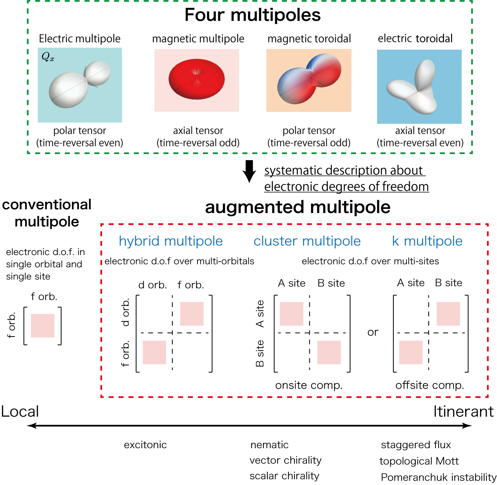
Interplay between fundamental electronic degrees of freedom in solids, such as charge, spin, and orbital, has attracted growing interest in various fields of condensed matter physics. The concept of multipoles, which are used to characterize electric charge and current distributions, has been widely developed to describe such multiple degrees of freedom in a unified way. Under the space-time inversion group, there are four types of multipoles according to their spatial inversion and time-reversal properties: electric (E: polar tensor with time-reversal even), magnetic (M: axial tensor with time-reversal odd), magnetic toroidal (MT: polar tensor with time-reversal odd), and electric toroidal (ET: axial tensor with time-reversal even) multipoles. The multipole description has been extensively studied in f-electron systems as an atomic object, while it is extended to a cluster consisting of several atomic sites, multiple hybrid orbitals, and molecular orbitals. These studies of multipoles are useful to cover various unconventional order parameters in a systematic manner and expect physical phenomena from the symmetry and microscopic viewpoints.
In our group, we construct a general microscopic formalism by using four types of multipoles.
Starting from the classical multipole expansion of electromagnetic scalar and vector potentials, and using the mutual relationship among four multipoles, we derive the quantum-mechanical operator expressions of MT and ET multipoles in addition to conventional E and M multipoles.
We demonstrate that these multipole degrees of freedom can be active in the Hilbert space spanned by orbitals with different azimuthal quantum number, e.g., s-d, p-d, and d-f hybrid orbitals.
We also discuss emergent cross-correlated couplings, such as magneto-electric and magneto(electro)-elastic couplings under multipole orderings.
Moreover, we present a comprehensive classification of multipoles under 32 crystallographic point groups and 122 magnetic point groups and what physical phenomena are expected in unconventional MT and ET multipoles.
Our achievements
♦Classification of superconducting order parameters
- A. Kirikoshi and S. Hayami, Phys. Rev. B 109, 174510 (2024)
♦Description of symmetry-adapted multipole basis
- H. Kusunose, R. Oiwa, and S. Hayami, Phys. Rev. B 107, 195118 (2023)
♦Classification of multipole under 32 crystallographic point groups and 122 magnetic point groups
- M. Yatsushiro, H. Kusunose, and S. Hayami, Phys. Rev. B 104, 054412 (2021)
- [Editors' Suggestion] S. Hayami, M. Yatsushiro, Y. Yanagi, and H. Kusunose,
Phys. Rev. B 98, 165110 (2018)
♦Generation scheme of cluster multipoles by using a symmetry-adapted orthonormal basis set
- [Editors' Suggestion] M.-T. Suzuki, T. Nomoto, R. Arita, Y. Yanagi, S. Hayami, and H. Kusunose, Phys. Rev. B 99, 174407 (2019)
♦Extension of the concept of multipoles so as to include cluster, bond, and parity mixing degrees of freedom
- S. Hayami, Y. Yanagi, and H. Kusunose, Phys. Rev. B 102, 144441 (2020)
- H. Kusunose, R. Oiwa, and S. Hayami, J. Phys. Soc. Jpn. 89, 104704 (2020)
♦Derivation of the quantum-mechanical operator expressions for two toroidal multipoles
- S. Hayami and H. Kusunose,
J. Phys. Soc. Jpn. 87, 033709 (2018)
Development and application of symmetry-adapted closest Wannier modeling based on complete multipole basis set
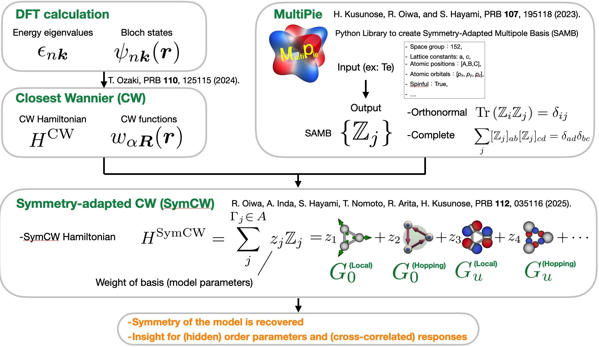
We are developing computational methods that integrate first-principles calculations incorporating the essential features of real materials with electronic multipole representation theory, which describes electronic states in terms of multipole bases. The rich variety of physical properties exhibited by materials, such as charge order, magnetic order, and superconductivity, arises from the complex interplay of multiple factors, including elemental composition, crystal structure, electron-electron interactions, spin-orbit coupling, and so on. To microscopically understand these phenomena, computational methods that construct low-energy effective Wannier models based on first-principles calculations have been rapidly developed in recent years. However, conventional approaches to first-principles-based effective Wannier modeling have been insufficient for revealing which types of couplings among spin, orbital, and sublattice degrees of freedom play essential roles in the emergence of target physics. To address this issue, we have recently developed a method for constructing symmetry-adapted effective models as a linear combination of the symmetry-adapted multipole bases (SAMB), which provide a transparent description of couplings among spin, orbital, and sublattice degrees of freedom. Each SAMB corresponds to a physically meaningful element, such as a crystal field parameter, spin-orbit coupling, and electron hoppings, allowing us to uncover essential hidden couplings from the model expression. The coefficients of the SAMB components correspond to the model parameters, which are optimized to reproduce the band structure obtained from first-principles calculations. These coefficients were originally optimized by iterative machine learning methods. However, by applying the closest Wannier method, we have developed a non-iterative approach that determines the coefficient of SAMBs uniquely through a simple matrix computation. When applied to elemental Te, our method achieved a mean absolute error of less than 1 meV in reproducing the energy eigenvalues obtained from first-principles calculations, demonstrating an accuracy nearly 100 times higher than previous approach using machine learning technique. This method has been released as the Python library SymClosestWannier, which is publicly available on GitHub (https://github.com/CMT-MU/SymClosestWannier), and is expected to enable wide-range applications in future materials research.
Our achievements
♦Electric-field-induced lattice rotational distortion arising from electro-toroidal monopole in chiral crystals
- R. Oiwa and H. Kusunose, Phys. Rev. Lett. 129, 116401 (2022)
♦Description of symmetry-adapted multipole basis
- H. Kusunose, R. Oiwa, and S. Hayami, Phys. Rev. B 107, 195118 (2023)
♦Development of symmetry-adapted closest Wannier modeling based on complete multipole basis set
- R. Oiwa, A. Inda, S. Hayami, T. Nomoto, R. Arita, and H. Kusunose, Phys. Rev. B 112, 035116 (2025)
Cross-correlated phenomena over electric, magnetic, elastic, heat, and light by odd-parity multipoles
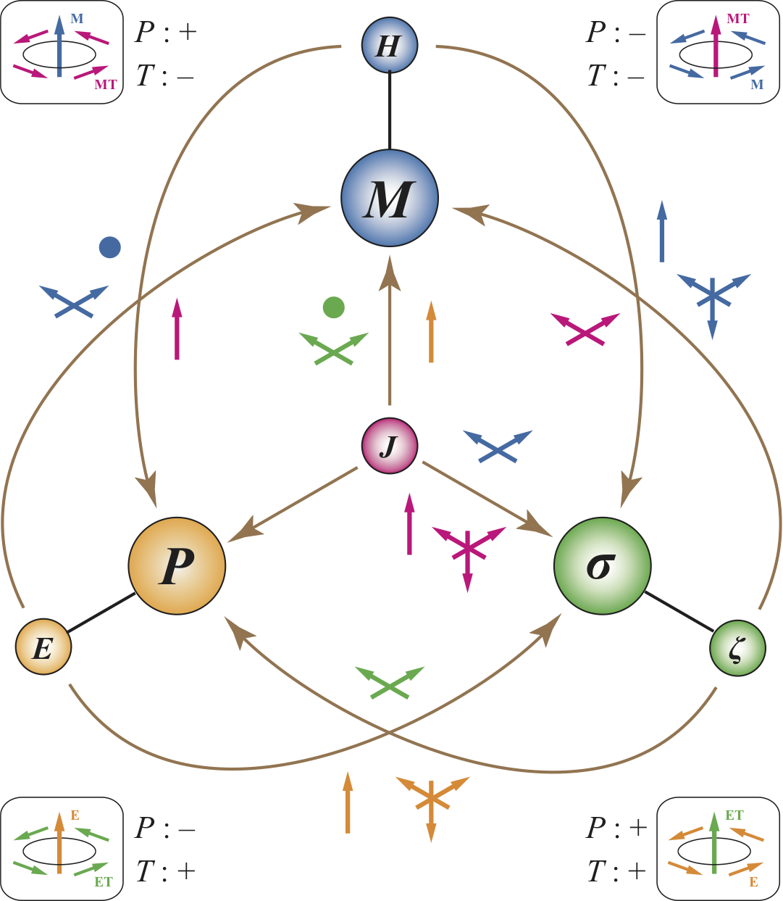
Symmetry is an important factor to determine physical properties of solids.
For example, the magnetic property of the system is closely related to the time-reversal symmetry, and the electric property is closely related to the spatial inversion symmetry.
In other words, the spontaneous uniform magnetization (electric polarization) occurs when the time-reversal (spatial inversion) symmetry in the system is broken.
When both time-reversal and spatial inversion symmetries are broken simultaneously, the system exhibits the multiferroic properties that shows the coupling between the electric and magnetic degrees of freedom.
Moreover, the concept of multiferroics is used to discuss the piezoelectricity induced by the coupling between the electric and elastic propeties and the magneto-striction induced by the coupling between the magnetic and elastic properties.
It is an interesting theoretical study to open up a possibility of new types of multiferroic phenomena at the fundamental level.
In our group, we aim at clarifying the systematic understanding of such multiferroic phenomena on the basis of microscopic multipole.
Our scope includes the electric current, spin current, and heat current in addition to the electric field, magnetic field, and strain field.
Our achievements
♦Time-reversal switching responses by magnetic toroidal monopole
- S. Hayami and H. Kusunose, Phys. Rev. B 104, 054412 (2021)
♦Cross-correlated and quantum conductive phenomena on the basis of microscopic multipoles
- M. Yatsushiro, H. Kusunose, and S. Hayami, Phys. Rev. B 104, 054412 (2021)
- [Editors' Suggestion] S. Hayami, M. Yatsushiro, Y. Yanagi, and H. Kusunose,
Phys. Rev. B 98, 165110 (2018)
♦Intrinsic nonlinear anomalous Hall effect by magnetic quadrupole and magnetic toroidal dipole
- A. Kirkoshi and S. Hayami, Phys. Rev. B 107, 155109 (2023)
♦Spin-orbital-momentum locking in magnetic quadrupole orderings
- S. Hayami and H. Kusunose, Phys. Rev. B 104, 045117 (2021)
♦NMR/NQR spectra under odd-parity multipole orderings
- M. Yatsushiro and S. Hayami, Phys. Rev. B 102, 195147 (2020)
♦Unconventional multipole orders and off-diagonal responses induced by hidden antisymmetric spin-orbit coupling
- M. Yatsushiro and S. Hayami, J. Phys. Soc. Jpn. 89, 013703 (2020)
- S. Hayami, H. Kusunose, and Y. Motome, J. Phys.: Condens. Matter 28, 395601 (2016)
- S. Hayami, H. Kusunose, and Y. Motome, Phys. Rev. B 90, 081115(R) (2014)
♦Current-induced magnetization in the metallic magnetic toroidal orderings
- [Editors' Suggestion] S. Hayami, H. Kusunose, and Y. Motome, Phys. Rev. B 90, 024432 (2014)
(Other references)
M. Yatsushiro and S. Hayami, JPS Conf. Proc. 30, 011151 (2020)
S. Hayami, H. Kusunose, and Y. Motome, Phys. Rev. B 97, 024414 (2018)
S. Hayami, H. Kusunose, and Y. Motome, Physica B: Condensed Matter 536, 649-653 (2018)
Y. Sugita, S. Hayami, and Y. Motome, Physics Procedia 75, 419-425 (2015)
S. Hayami, H. Kusunose, and Y. Motome, J. Phys.: Conf. Ser. 592, 012131 (2015)
Development of systematic analysis method for nonlinear response tensors
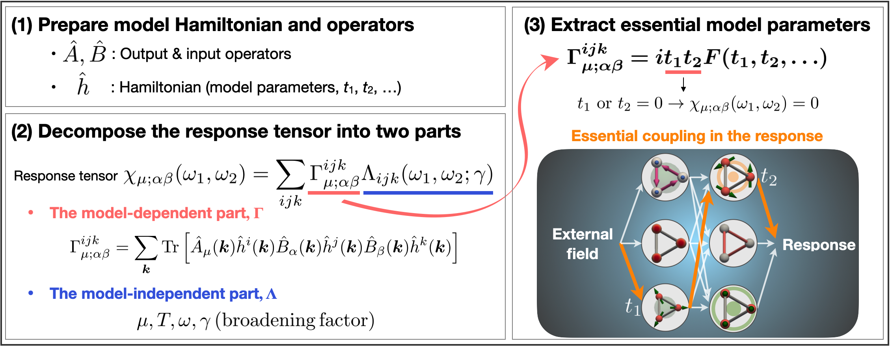
Recently, there has been growing interest in complex linear and nonlinear physical responses, such as the giant anomalous Hall and Nernst effects observed in antiferromagnets, and the nonlinear Hall effect in nonmagnetic materials with broken spatial inversion symmetry. These response phenomena originate from the symmetry of the system and the correlations among internal electronic degrees of freedom. To obtain a deeper understanding of their underlying mechanisms, it is essential to identify the essential model parameters that give rise to the response, as well as the nontrivial contributions arising from couplings between charge and magnetic orders and the essential model parameters. However, such analysis has been difficult to perform using conventional theoretical approaches. In our group, we have developed a general method that systematically extracts the essential model parameters responsible for linear and nonlinear responses by combining the Keldysh formalism with the Chebyshev polynomial expansion method. This approach allows us to analytically express response functions, which have traditionally been treated only numerically, as polynomials of the model parameters. As a result, it becomes possible to explicitly identify the essential contributions to the response in terms of the underlying parameters, thereby uncovering the essential mechanisms that generate various response phenomena. Our method is applicable not only to linear responses, but also to a wide range of nonlinear response phenomena including nonlinear optical and electrical conductivities, as well as diverse cross-correlated responses. Furthermore, this method can be applied not only to periodic crystalline systems, but also to isolated cluster systems such as molecules and artificial atoms. It is therefore expected to find wide-ranging applications beyond solid-state physics, including in inorganic and organic chemistry, and nanoscience. Through this development, we provide a new guideline for understanding complex physical responses and for the efficient exploration of functional materials.
Our achievements
♦Development of systematic analysis method for nonlinear response tensors
- [Editors' Choice] R. Oiwa and H. Kusunose, J. Phys. Soc. Jpn. 91, 014701 (2022)
♦Nonreciprocal transport under the metallic magnetic toroidal ordering
- M. Yatsushiro, R. Oiwa, H. Kusunose, and S. Hayami, Phys. Rev. B 105, 155157 (2022)
Understanding physical phenomena induced by toroidal orderings
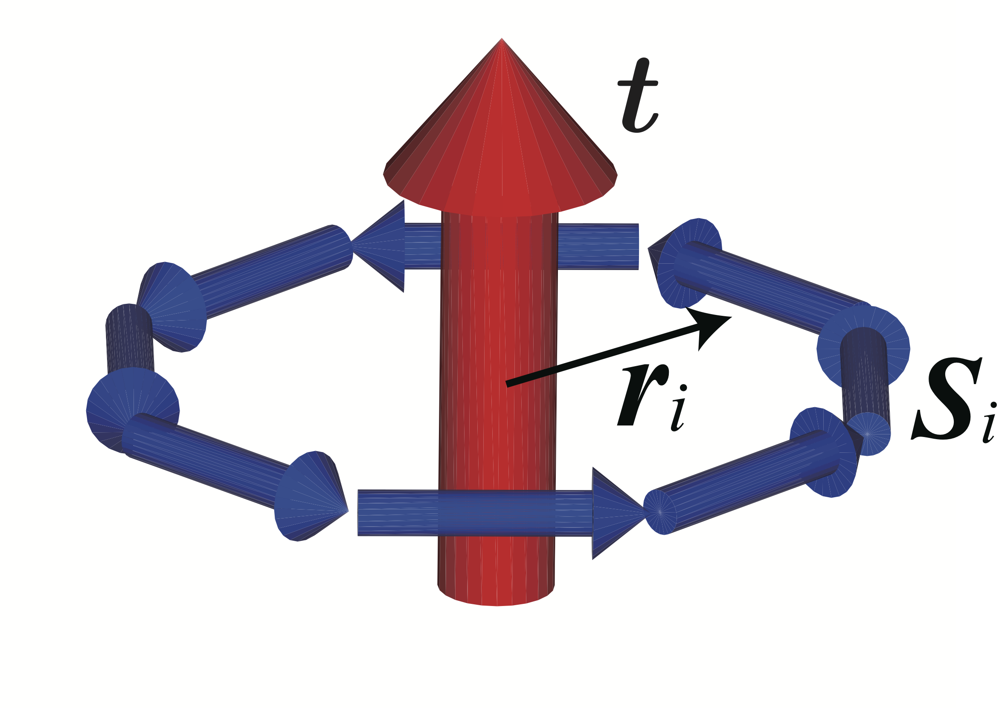
Two toroidal multipoles (magnetic toroidal and electric toroidal multipoles) with the different spatial inversion and time-reversal parities from the conventional electric and magnetic multipoles have received much attention, since they are a source of unconventional electronic orderings with new physical functions. For example, magnetic toroidal dipole activated in the absence of both spatial inversion and time-reversal symmetries gives rise to a linear magneto-electric effect and nonreciprocal directional dichroism. Meanwhile, it is still unclear what physical phenomena are caused by electric toroidal dipole in the presence of both spatial inversion and time-reversal symmetries. These magnetic and electric toroidal dipoles have been discussed in magnetic insulators with nonzero vector product of the magnetization and the electric polarization and electric insulators with nonzero vector product of the electric polarization and the position vector, respectively. However, there have been issues about the stabilization mechanisms of the toroidal orderings and the microscopic understanding for their physical phenomena. In our group, we have studied such toroidal physics on the basis of the microscopic model calculations.
Our achievements
♦Quantification of chirality based on electric toroidal monopole
- A. Inda, R. Oiwa, S. Hayami, H. M. Yamamoto, and H. Kusunose, J. Chem. Phys. 160, 184117 (2024)
♦Antisymmetric thermopolarization by electric toroidal dipole moment
- J. Nasu and S. Hayami, Phys. Rev. B 105, 245125 (2022)
♦Spin conductivity induced by magnetic toroidal quadrupole
- S. Hayami and M. Yatsushiro, J. Phys. Soc. Jpn. 91, 063702 (2022)
♦Nonreciprocal transport under the metallic magnetic toroidal ordering
- M. Yatsushiro, R. Oiwa, H. Kusunose, and S. Hayami, Phys. Rev. B 105, 155157 (2022)
♦Electric toroidal quadrupole in spin-orbit-coupled metal Cd2Re2O7
- S. Hayami, Y. Yanagi, H. Kusunose, and Y. Motome, Phys. Rev. Lett. 122, 147602 (2019)
♦Derivation of the quantum-mechanical operator expressions for two toroidal multipoles
- S. Hayami and H. Kusunose,
J. Phys. Soc. Jpn. 87, 033709 (2018)
♦Nonreciprocal magnon excitations under the magnetic toroidal orderings
- S. Hayami, H. Kusunose, and Y. Motome, J. Phys. Soc. Jpn. 85, 053705 (2016)
♦Mechanism of the magnetic toroidal ordering in metals
- M. Yatsushiro and S. Hayami, J. Phys. Soc. Jpn. 88, 054708 (2019)
- S. Hayami, H. Kusunose, and Y. Motome, J. Phys. Soc. Jpn. 84, 064717 (2015)
- [Editors' Suggestion] S. Hayami, H. Kusunose, and Y. Motome, Phys. Rev. B 90, 024432 (2014)
(Other references)
S. Hayami and H. Kusunose, J. Phys. Soc. Jpn. 91, 123701 (2022)
S. Hayami, H. Kusunose, and Y. Motome, J. Phys. Soc. Jpn. 88, 063702 (2019)
S. Hayami, H. Kusunose, and Y. Motome, J. Phys.: Conf. Ser. 592, 012101 (2015)
Novel off-diagonal response caused by ferro-axial moment
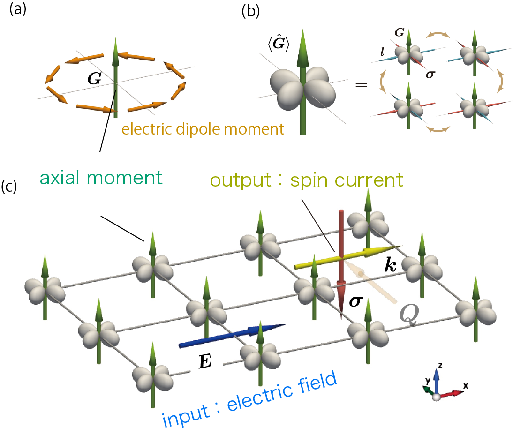
Various functionalities in materials, such as magnetism and electricity, are closely related to the symmetry breakings in the physical systems.
For example, magnetisim appears when time-reversal symmetry is broken, while electricity appears when spatial inversion symmetry is broken.
Moreover, multiferroicity, where an external magnetic (electric) field induces the electric polarizatoin (magnetization), appears when both spatial inversion and time-reversal symmetries are broken.
These functionalities play an important role for modern electronics and spintronics, since they are directly controlled by electromagnetic fields.
On the other hand, further intriguing quantum phases can appear under the interplay between internal electronic degrees of freedom in solids.
Among them, ferro-axial ordering under the mirror symmetry breaking was thought to be a mysterious state, althouth its emergence was reported in several materials.
One of the reasons is that the ferro-axial moment does not directly couple with electromagnetic fields, which is qualitatively different from magnetisim and electricity.
In the present study, we theoretically investigate the consequences of the presence of the ferro-axial ordering by incorporating symmetry and microscopic model analyses.
Based on the augmented multipole description, we show that atomic-scale electric toroidal multipoles are the heart of the ferro-axial ordering, which act as a nanometric rotator against external stimuli;
an input field induces the transverse response of the conjugate physical quantities.
Among them, we propose an intrinsic generation of a longitudinal spin current by an external electric field, which is a different spin conductive phenomenon from the spin Hall effect.
Our results would be useful to unveil unexplored fascinating functional materials with the electric ferro-axial moment.
Our achievements
♦Mangetic instability under electric toroidal dipole ordering
- A. Inda and S. Hayami, Phys. Rev. B 109, 174424 (2024)
♦Nonlinear magnetostriction effect by electric toroidal dipole moment
- A. Kirikoshi and S. Hayami, J. Phys. Soc. Jpn. 92, 123703 (2023)
♦In-plane Hall effect by electric toroidal dipole moment
- S. Hayami, R. Oiwa, and H. Kusunose, Phys. Rev. B 108, 085124 (2023)
♦Nonlinear transverse magnetization by electric toroidal dipole moment
- A. Inda and S. Hayami, J. Phys. Soc. Jpn. 92, 043701 (2023)
♦Spin current generation under ferro-axial ordering
- [Editors' Choice] S. Hayami, R. Oiwa, and H. Kusunose, J. Phys. Soc. Jpn. 91, 113702 (2022)
♦Ferroaxial moment induced by vortex spin texture
- [Editors' Suggestion] S. Hayami, Phys. Rev. B 106, 144402 (2022)
♦Antisymmetric thermopolarization by electric toroidal dipole moment
- J. Nasu and S. Hayami, Phys. Rev. B 105, 245125 (2022)
(Other references)
S. Hayami, Phys. Rev. B 108, 094106 (2023)
Emergent spin-orbit interaction in magnetic systems without the relativistic spin-orbit coupling
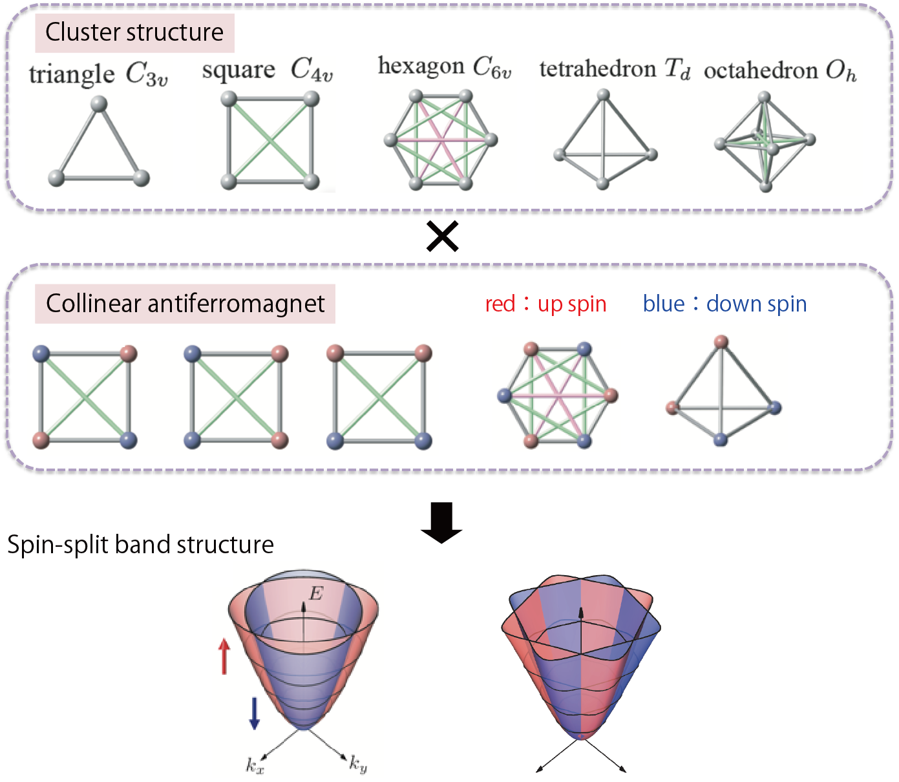
The atomic spin-orbit coupling, which couples the orbit and spin degrees of freedom in electrons, has been attracting much interest, as it leads to unusual topological properties and multiferroics phenomena. Especially, in the noncentrosymmetric cyrstals, an effective magnetic field depending on the asymmetric potential gradient in the crystal structure couples with the electron spin, which results in the spin conductive phenomena, such as the spin-current generation and spin-Hall effect. Such spin-dependent conductive properties are well understood from the emergent antisymmetric spin-orbit coupling which arises from the coupling between electron momentum and spin in wave-number space. Meanwhile, the recent studies show that the spontaneous symmetry breaking of the crystal symmetry provides another spin-orbit coupling physics. Such an emergent spin-orbit interaction is caused by the antiferromagnetic ordering even without the atomic spin-orbit coupling, which gives alternative way to engineer the spin-orbit coupling physics for the materials with the small atomic spin-orbit coupling, such as organic conductors and 3d transition metal oxides. However, the microscopic conditions for emergent spin-orbit physics are still unclear.
We theoretically investigate the symmetry and microscopic conditions for the spin-split band structure by focusing on the antiferromagnet in the absence of the atomic spin-orbit coupling.
We clarify that anisotropic kinetic motions of electrons in an antiferromagnet gives rise to an effective spin–orbit interaction in momentum space on the basis of a microscopic multipole description.
Moreover, we theoretically establish an efficient microscopic bottom-up design procedure of electronic band structures base on the concept of augmented multipoles.
Our general scheme can be ubiquitously applied to any types of magnetic orderings with collinear, coplanar, and noncoplanar spin structures and any lattice systems, and predict cross-correlated responses, such as a spin-current generation by electric (thermal) current and a uniform magnetization by a strain field.
Our achievements
♦Nonlinear spin current generation in polar collinear antiferromagnets
- S. Hayami, Phys. Rev. B 109, 214431 (2024)
♦Scheme of spin-split and reshaped electronic band structures without the spin-orbit coupling based on augmented multipoles
- S. Hayami, Y. Yanagi, and H. Kusunose, Phys. Rev. B 102, 144441 (2020)
♦Antisymmetric spin spltting under the noncollinear magnetic orderings
- S. Hayami, Y. Yanagi, and H. Kusunose, Phys. Rev. B 101, 220403(R) (2020)
♦Symmetric spin spltting under the ollinear magnetic orderings
- S. Hayami, Y. Yanagi, and H. Kusunose, J. Phys. Soc. Jpn. 88, 123702 (2019)
♦Spin current generation in the organic conductor k-ET salt
- S. Hayami, Y. Yanagi, M. Naka, H. Seo, Y. Motome, H. Kusunose, JPS Conf. Proc. 30, 011149 (2020)
- [Editors' Highlights] M. Naka, S. Hayami, H. Kusunose, Y. Yanagi, Y. Motome, and H. Seo, Nat. Commun. 10, 4305 (2019)
Magnetic skyrmion crystals by itinerant frustration
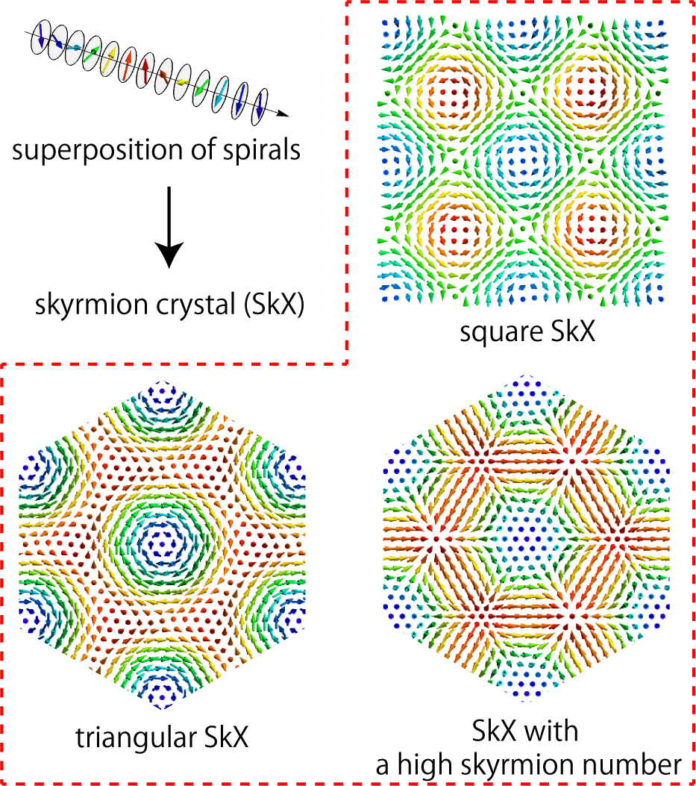
Spin textures with nontrivial topology, such as skyrmions, hedgehogs, and vortices, have drawn considerable attention as a source of unconventional magnetic, transport, and optical phenomena. Recently, a new generation of topological spin textures has been extensively studied in itinerant magnets. The underlying machanism is starkly different from the conventional ones induced, e.g., by the Dzyaloshinskii–Moriya interaction in noncentrosymmetric systems, and hence, the emergent topological spin textures exhibit extremely short magnetic periods and are stable even in the centrosymmetric lattice structures. By carefully examining the interplay between charge and spin degrees of freedom in itinerant electron systems, we propose that a concept of itinerant frustration that arises from the competition among electron-mediated interactions is useful to understand the stabilzation of various topological spin crystals including a skyrmion crystal with unconventional high skyrmion number, meron crystals, and hedgehog crystals. We also obtain the effective bilinear–biquadratic spin model in momentum space that can be a canonical model for understanding the multiple-Q instabilities in itinerant magnets. Our findings are relevant to understanding of a new generation of the skyrmion crystals with unusually short magnetic periods, experimentally discovered in f-electron compounds Gd3Ru4Al14 and GdRu2Si2.
Our achievements
♦Review article
- S. Hayami and Y. Motome, J. Phys.: Condens. Matter 33, 443001 (2021)
♦New stabilization mechanism of the nanometric skyrmion crystals in itinerant magnets
- S. Hayami, R. Ozawa, and Y. Motome, Phys. Rev. B 95, 224424 (2017)
♦Discovering of the skyrmion crystal with the high topological number by large-scale numerical simulations
- S. Hayami and Y. Motome, Phys. Rev. B 99, 094420 (2019)
- R. Ozawa, S. Hayami, and Y. Motome, Phys. Rev. Lett. 118, 147205 (2017)
♦Phase shift in skyrmion crystals
- S. Hayami, T. Okubo, and Y. Motome, Nat. Commun. 12, 6927 (2021)
♦Effective spin model with anisotropic spin interadctions in momentum space
- R. Yambe and S. Hayami, Phys. Rev. B 106, 174437 (2022)
- R. Yambe and S. Hayami, Phys. Rev. B 107, 174408 (2023)
♦New types of the skyrmion crystals induced by the interplay between charge, spin, and orbital
- [Editors' Choice] S. Hayami and R. Yambe, J. Phys. Soc. Jpn. 90, 073705 (2021)
- R. Yambe and S. Hayami, Sci. Rep. 11, 11184 (2021)
- S. Hayami and Y. Motome, Phys. Rev. B 103, 054422 (2021)
- S. Hayami and Y. Motome, Phys. Rev. B 103, 024439 (2021)
- S. Hayami and Y. Motome, Phys. Rev. Lett. 121, 137202 (2018)
(Other references)
K. Kobayashi and S. Hayami, Phys. Rev. B 106, L140406 (2022)
S. Hayami and R. Yambe, Phys. Rev. B 105, 224423 (2022)
S. Hayami and R. Yambe, Phys. Rev. B 105, 104428 (2022)
S. Hayami, J. Phys. Soc. Jpn. 91, 023705 (2022)
S. Hayami and R. Yambe, Phys. Rev. Research 3, 043158 (2021)
S. Hayami and R. Yambe, J. Phys. Soc. Jpn. 89, 103702 (2020)
S. Hayami and Y. Motome, Phys. Rev. B 90, 060402(R) (2014)
Generation of skyrmion crystals by using multi-layer structures
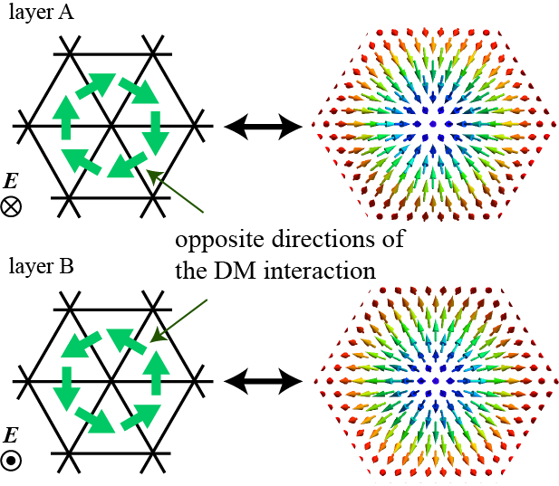
Multi-layer structures, which consist of a quasi-two-dimensional layer, have attracted much interest, since they give rise to physical phenomena, such as high-temperature superconductivity and magnetism.
Among them, the multi layer degree of freedom depending on the stacking enables us to engineer an intriguing situation which is different from the bulk crystals.
Such a multi layer degree of freedom has been recently studied from the viewpoint of "van der Waals crystals", "moiré structure" , and "2.5 dimensions".
So far, we have clarified a new mechanism of the magnetic skyrmion crystals based on the multi layer degree of freedom by theoretical modeling and analysis.
Our achievements
♦Skyrmion crystals under ferromagnetic/antiferromagnetic bilayer systems
- K. Okigami, R. Yambe, and S. Hayami, J. Phys. Soc. Jpn. 91, 103701 (2022)
♦Skyrmion crystals under bilayer square magnets
- S. Hayami, J. Phys.: Condens. Matter 34, 365802 (2022)
♦Skyrmion crystals under screw-symmetric triangular magnets
- S. Hayami, Phys. Rev. B 105, 224411 (2022)
♦Skyrmion crystals under trilayer triangular magnets
- S. Hayami, Phys. Rev. B 105, 184426 (2022)
♦Skyrmion crystals under bilayer triangular magnets
- S. Hayami, Phys. Rev. B 105, 014408 (2022)
Search for novel topological magnetic phases in itinerant magnets
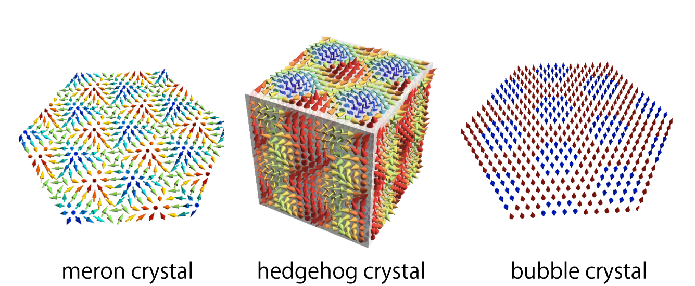
Noncollinear and noncoplanar spin textures in solids manifest themselves not only in their peculiar magnetism but also in unusual electronic and transport properties.
Recently, itinerant magnets consisting of localizd spins and itinerant electrons have attracted great interest, since they describe various magnetic textures as the stable states.
In our group, by performing numerical simulations for an effective spin model that is obtained by taking into account the effect of itinerant frustration in itinerant magnets, we try to search for interesting topological magnetic textures.
So far, we have found a lot of topologial spin crystals, such as the meron crystal, hedgehog crystal, bubble crystal, vortex crystal, and chiral stripe.
Our achievements
♦Multiple-Q state accompaning dipole and quadrupole modulations
- S. Hayami and K. Hattori, J. Phys. Soc. Jpn. 92, 124709 (2023)
♦Magnetic bubble crystal on a centrosymmetric square lattice
- S. Hayami and Y. Kato, Phys. Rev. B 108, 024426 (2023)
♦ Stabilization mechanism of antiferro-type skyrmion crystal
- R. Yambe and S. Hayami, Phys. Rev. B 107, 014417 (2023)
- S. Hayami, J. Phys. Soc. Jpn. 92, 084702 (2023)
- S. Hayami, Phys. Rev. B 109, 014415 (2024)
♦Meron cyrstal in noncentrosymmetric itinerant magnets on the triangular lattice
- S. Hayami and R. Yambe, Phys. Rev. B 104, 094425 (2021)
♦Hedgehog crystal in noncentrosymmetric itinerant magnets on the cubic lattice
- S. Okumura, S. Hayami, Y. Kato, and Y. Motome, JPS Conf. Proc. 30, 011010 (2020)
- S. Okumura, S. Hayami, Y. Kato, and Y. Motome, Phys. Rev. B 101, 144416 (2020)
♦Bubble crystal in itinerant magnets with the strong Ising interaction
- S. Hayami, New J. Phys. 23, 113032 (2021)
- S. Hayami, J. Magn. Magn. Mater. 513, 167181 (2020)
♦Chiral stripe in the Kondo lattice model and the d-p model
- R. Yambe and S. Hayami, J. Phys. Soc. Jpn. 89, 013702 (2020)
- R. Ozawa, S. Hayami, K. Barros, G. W. Chern, Y. Motome, and C. D. Batista, J. Phys. Soc. Jpn. 85, 103703 (2016)
(Other references)
S. Hayami, J. Magn. Magn. Mater. 564, 170036 (2022)
S. Okumura, S. Hayami, Y. Kato, and Y. Motome, J. Phys. Soc. Jpn. 91, 093702 (2022)
S. Hayami and Y. Motome, IEEE Transactions on Magnetics 55, 1500107 (2018)
S. Hayami, R. Ozawa, and Y. Motome, Phys. Rev. B 94, 024424 (2016)
Peculiar electronic and magnetic states in spin-charge coupled systems
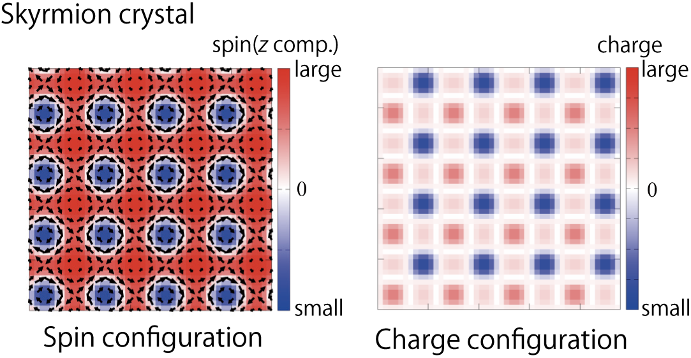
Topological spin textures like the skyrmion and the hedgehog are charcterized by the multiple-Q states consisting of a superposition of multiple spin density waves.
In these multiple-Q states, intriguing physical state and their related phenomena appear owing to thier complex magnetic textures and topologically-nontrivial electronic states, such as the Chern insulator, the topological Hall effect, the charge density wave, the nonlinear transport.
For these problems, we are interested in the role of the spin-charge coupling that arises from the entanglement between the spin and charge degrees of freedom in electrons.
Our achievements
♦Antisymmetric spin-split band structure in multiple-Q orderings
- S. Hayami, Phys. Rev. B 105, 024413 (2022)
♦Spin wave excitations in multiple-Q orderings
- Y. Kato, S. Hayami, and Y. Motome, Phys. Rev. B 104, 224405 (2021)
♦Charge density wave in multiple-Q orderings
- S. Hayami and Y. Motome, Phys. Rev. B 104, 144404 (2021)
♦Nonlinear conductive property brought about by the phase degree of freedom in multiple-Q orderings
- Y. Su, S. Hayami, and S.-Z. Lin, Phys. Rev. Research 2, 013160 (2020)
♦Domain formation in multiple-Q orderings
- R. Ozawa, S. Hayami, K. Barros, and Y. Motome, Phys. Rev. B 96, 094417 (2017)
♦Topological Hall effect in multiple-Q orderings
- S. Hayami and Y. Motome, Phys. Rev. B 91, 075104 (2015)
♦Dirac-type band dispersion in multiple-Q orderings
- S. Hayami, T. Misawa, Y. Yamaji, and Y. Motome, Phys. Rev. B 89, 085124 (2014)
(Other references)
S. Hayami, T. Misawa, and Y. Motome, JPS Conf. Proc. 3, 016016 (2014)
Stabilization mechanism and dynamics in magnetic skyrmion and vortex in localized spin system
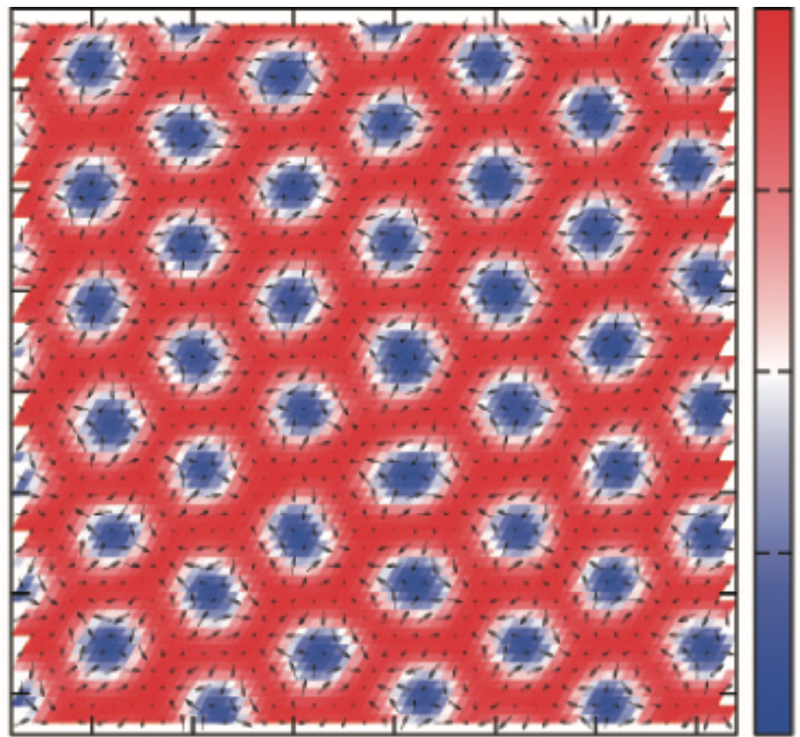
Magnetic skyrmions, which are characterized as topologically-nontrivial magnetic textures, have been extensively studied since their discovery in B20 compound without the inversion symmetry, since they lead to unconventional topological Hall effect and magneto-electric effect. It is known that the Dzyaloshinskii-Moriya interaction originating from the atomic spin-orbit coupling without the inversion symmetry plays an important role in realizing magnetic skyrmions. Meanwhile, recent theoretical studies exhibit that the skyrmions are stabilized in frustrated magnets.
In our group, we investigate a classical Heisenberg model with the frustrated exchange interactions and the single-ion anisotropy on a triangular lattice in order to clarify the stability of skyrmion crystals without the atomic spin-orbit coupling.
By using analytical calculations, variational calculations, and Monte Carlo calculations, we find the conditions for the emergence of skyrmion structures.
We elucidate that the following three ingredients are enough to obtain field-induced skyrmion crystals: (1) C6 symmetry, (2) finite Q ordering due to competing interactions, and (3) easy-axis anisotropy.
Our achievements
♦Exploring topological spin order by inverse Hamiltonian design
- K. Okigami and S. Hayami, Phys. Rev. B 110, L220405 (2024)
♦Review article
- C. D. Batista, S.-Z. Lin, S. Hayami, and Y. Kamiya, Rep. Prog. Phys. 79, 084504 (2016)
♦Magnetic vortex induced around nonmagnetic impurity
- S. Hayami, S.-Z. Lin, Y. Kamiya, and C. D. Batista, Phys. Rev. B 94, 174420 (2016)
- S.-Z. Lin, S. Hayami, and C. D. Batista, Phys. Rev. Lett. 116, 187202 (2016)
♦Frustrated skyrmion under the easy-axis magnetic anisotropy
- S. Hayami, S.-Z. Lin, and C. D. Batista, Phys. Rev. B 93, 184413 (2016)
♦Dynamic of frustrated skyrmion
- S.-Z. Lin and S. Hayami, Phys. Rev. B 93, 064430 (2016)
(Other references)
S. Hayami, J. Phys. Soc. Jpn. 91, 093701 (2022)
S. Hayami, Phys. Rev. B 105, 174437 (2022)
S. Hayami, J. Magn. Magn. Mater. 553, 169220 (2022)
S. Hayami, Phys. Rev. B 103, 224418 (2021)
Photo-induced quantum states of matter and physical phenomena -topological magnetism and unconventional multipole orderings-
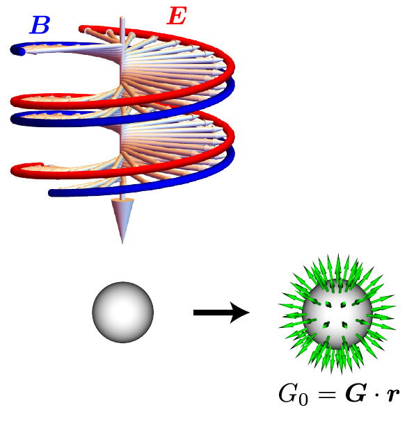
Electromagnetic fields are fundamental tools to investigate electric and/or magnetic properties in materials. Microscopically, they are coupled to the electric and magnetic dipolar moments. Meanwhile, other multipolar moments, such as magnetic toroidal and electric toroidal multipolar moments, have been recently studied in condensed matter physics, since they describe any physical quantities that are not expressed by conventional electric and magnetic multipolar moments from the microscopic point of view. For example, chirality in the absence of both spatial inversion and mirror symmetries corresponds to the electric toroidal monopolar moment. However, they usually appear in an “accidental” way depending on the chemical compositions and lattice structures, as there are no simple conjugate static electromagnetic fields to couple with such moments.
In this topic, we theoretically investigate how to induce and control various quantum states of matter and physical phenomena by using an electromagnetic wave.
By adopting the Floquet formalism and numerical simulations, we examine the behavior of unconventional states.
As an example, we show that the circular polarization of the electromagnetic wave can induce atomic-scale chirality, i.e., electric toroidal monopole.
Another example is that we show that the magnetic states with ferrochirality, such as the skyrmion crystals, are induced by a time-dependent electric field.
Our achievements
♦Dynamical generation of skyrmion crystals by a circularly polarized electric field
- R. Yambe and S. Hayami, Phys. Rev. B 110, 014428 (2024)
♦Photo-induced chirality and magnetic toroidal moment
- S. Hayami, R. Yambe, and H. KusunoseJ. Phys. Soc. Jpn. 93, 043702 (2024)
♦Scalar spin chirality by circularly polarized electric field
- R. Yambe and S. Hayami, Phys. Rev. B 109, 064428 (2024)
♦Symmetry classification of laser-induced magnetic anisotropy
- R. Yambe and S. Hayami, Phys. Rev. B 108, 064420 (2023)
Microscopic mechanism of nonreciprocal magnon excitations
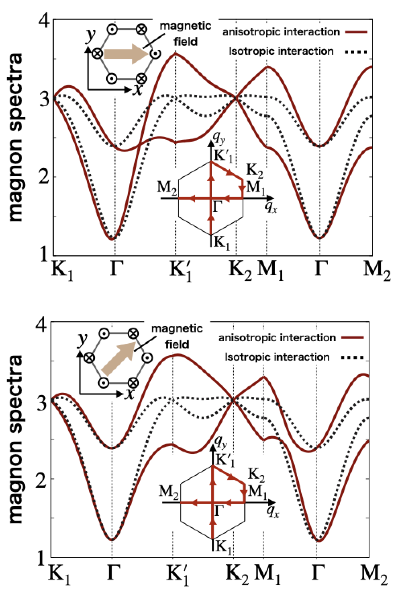
Asymmetric magnon excitations with respect to the wave number in noncentrosymmetric magnets has drawn considerable interest in condensed matter physics, since it leads to intriguing phenomena, such as nonreciprocal directional optics. On the basis of the microscopic theory, the mechanisms of such nonreciprocal magnon excitations are limited in the noncentrosymetric systems with the Dzyaloshinskii-Moriya interaction and the frustrated systems with the competing exchange interactions.
To open up a further mechanism to induce nonreciprocal magnons, we focus on the role of magnetic anisotropy in the lattice structure.
We consider the staggered antiferromagnetic ordering in the honeybomc lattice structure, which breaks the global inversion symmetry.
By performing a linear-spin wave claculation using the Holstein-Primakoff transformation, we theoretically elucidate that the symmetric anisotropic exchange intearction on the bond becomes the microscopic origin of the nonreciprocal magnon exciations.
We also show that the direction of magnon nonreciprocity is controlled by applying the in-plane magnetic field.
Moreover, we introduce the concept of magnretic toroidal multipole in order to deeply understand the microscopic origin of the nonreciprocal magnons.
Our achievements
♦Extrating essential model parameters for nonreciprocal magnons
- S. Hayami and T. Matsumoto, Phys. Rev. B 105, 014404 (2022)
♦Engineering nonreciprocal magnon excitations by using bond magnetic toroidal moment
- T. Matsumoto and S. Hayami, Phys. Rev. B 104, 134420 (2021)
♦Nonreciprocal magnon excitations by anisotropic bond-dependent interaction
- T. Matsumoto and S. Hayami, Phys. Rev. B 101, 224419 (2020)
♦Nonreciprocal magnon under the magnetic toroidal ordering
- S. Hayami, H. Kusunose, and Y. Motome, J. Phys. Soc. Jpn. 85, 053705 (2016)
Search for functional materials toward antiferromagnetic spintronics
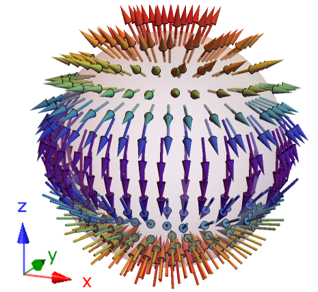
Antiferromagnetic spintronics has attracted great interest in recent years.
In contrast to ferromagnetic spintronics, the antiferromagnetic system has a great advantage to efficient spintronics devices without the leakage of magnetic field.
More recently, several physical phenomena, such as the anomalous Hall effect, anomalous Nernst effect, and magneto-optical Kerr effect, that were thought to be related to the ferromagnetic ordering, have been observed in the antiferromagnetic materials even with the negligibly small magnetization.
Although the symmetry argment gives a reason why the antiferromagnetic materials shows the same physical phenomena as the ferromagnetic materials, the key electronic degrees of freedom have not been fully eludicated.
In our group, we aim at clarifying a key ingredient for these physical phenomena on the basis of microscopic multipoles.
Our achievements
♦Nonlinear nonreciprocal transport without the spin-orbit coupling
- [Editors' Suggestion] S. Hayami and M. Yatsushiro, Phys. Rev. B 106, 014420 (2022)
♦Nonlinear spin Hall effect in PT-symmetric magnets
- S. Hayami, M. Yatsushiro, and H. Kusunose, Phys. Rev. B 106, 024405 (2022)
♦Anomalous Hall effect in antiferromagnets without a net magnetization based on anisotropic magnetic dipole
- S. Hayami and H. Kusunose, Phys. Rev. B 103, L180407 (2021)
♦Anomalous Hall effect in the organic conductor k-ET salt
- M. Naka, S. Hayami, H. Kusunose, Y. Yanagi, Y. Motome, and H. Seo, Phys. Rev. B 102, 075112 (2020)
(Other references)
S. Hayami and M. Yatsushiro, J. Phys. Soc. Jpn. 91, 094704 (2022)
Novel magnetic states by geometrical frustration
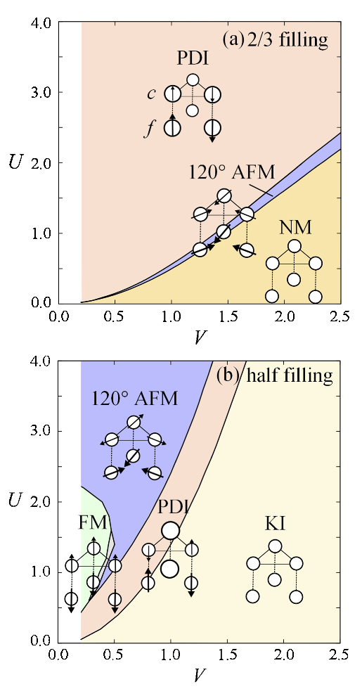
Magnetic frustration is a source of unconventional magnetic orderings that is distinct from the simple ferromagnetic and collinear antiferromagnetic orderings.
Among them, we investigate the effect of geometrical frustration in the quantum critical region, with emphasis on the emergence of a partially disordered state. The partially disordered state is characterized by the coexistence of magnetic order and a nonmagnetic Kondo singlet, which gives an intriguing example of self-organization to relieve geometrical frustration.
By using the mean-field calculation, we examine the nature of the partially disordered state in the periodic Anderson model on a triangular lattice.
As a result, we find a collection of different types of the partially disordered states, both insulating and metallic, depending on the model parameters. At half-filling, we obtain a partially-disordered insulating state between a noncollinear antiferromagnetic metal and a Kondo insulator. The partially disordered state is stabilized by releasing the frustration with self-organizing the system into the coexistence of collinear antiferromagnetic order on unfrustrated honeycomb subnetwork and nonmagnetic state at the remaining sites.
Furthermore, we find another type of partially-disordered insulating states at two commensurate fillings, 2/3 and 8/3 fillings. These states show different nature from that at half-filling: The nonmagnetic sites appear to be simply paramagnetic rather than the singlet state due to the hybridization; they are not separated from but rather connected with the magnetic sites. Reflecting the difference, the partially disordered states at 2/3 and 8/3 fillings exhibit distinct responses to the spin anisotropy and magnetic field compared to the half-filling case.
As a particularly interesting point, we find that the partially-disordered insulating state at 2/3 filling is changed into a partially-disordered metallic state by hole doping without showing a phase separation.
Our achievements
♦Stabilization of the metallic partially-disordered state
- S. Hayami, M. Udagawa, and Y. Motome, J. Phys. Soc. Jpn. 81,103707 (2012)
- S. Hayami, M. Udagawa, and Y. Motome, J. Phys.: Conf. Ser. 400, 032018 (2012)
♦Analysis of the electronic structure under the partially-disordered state
- S. Hayami, M. Udagawa, and Y. Motome, J. Phys. Soc. Jpn. 80, 073704 (2011)
Analysis of unconventional electronic orderings and physical phenomena discovered in real materials
The theoretical study is closely related to the experimental study in condensed matter physics.
In our group, we have studied unconventional electronic orderings and physical phenomena discovered in real materials.
Our achievements
♦Magnetic phase diagram in the skyrmion hosting material GdRu2Ge2
- H. Yoshimochi, S. Hayami(11) et al., Nat. Phys. 20, 1001–1008 (2024)
♦Structural transition of skyrmions in EuNiGe3
- D. Singh, Y. Fujishiro, S. Hayami et al., Nat. Commun. 14, 8050 (2023)
- S. Hayami, Phys. Rev. B 109, 054422 (2024)
♦Chiral charge as hidden order parameter in URu2Si2
- S. Hayami and H. Kusunose, J. Phys. Soc. Jpn. 92, 113704 (2023)
♦Mean-field analysis for the odd-parity candidate material CeCoSi
- M. Yatsushiro and S. Hayami, J. Phys. Soc. Jpn. 91, 104701 (2022)
♦Magnetic phase diagram in the skyrmion hosting material EuAl4
- R. Takagi, N. Matsuyama, S. Hayami(8) et al., Nat. Commun. 13, 1472 (2022)
- S. Hayami, J. Phys.: Mater. 6, 014006 (2023)
♦Magnetic phase diagrams in the skyrmion and multiple-Q hosting material GdRu2Si2
- N. D. Khanh, T. Nakajima, S. Hayami et al., Adv. Sci. 9, 2105452 (2022)
- S. Hayami and Y. Kato, J. Magn. Magn. Mater. 571, 170547 (2023)
♦Nanometric skyrmion crystals in EuPtSi
- [Editors' Choice] S. Hayami and R. Yambe, J. Phys. Soc. Jpn. 90, 073705 (2021)
♦Electric toroidal dipole in Ca5Ir3O12
- [Editors' Choice] H. Hanate, T. Hasegawa, S. Hayami, S. Tsutsui, S. Kawano, and K. Matsuhira, J. Phys. Soc. Jpn. 90, 063702 (2021)
- S. Hayami et al., J. Phys. Soc. Jpn. 92, 033702 (2023)
♦Magnetic bubble in CeAuSb2
- S. Seo, S. Hayami et al., Commun. Phys. 4, 58 (2021)
♦Magnetic phase diagram in the skyrmion hosting material Gd3Ru4Al12
- M. Hirschberger, S. Hayami, and Y. Tokura, New J. Phys. 23, 023039 (2021)
♦Charge density wave in the skyrmion hosting material GdRu2Si2
- J. Spethmann, S. Hayami (5) et al., Phys. Rev. Mater. 8, 064404 (2024)
- Y. Yasui, C. J. Butler, N. D. Khanh, S. Hayami et al., Nat. Commun. 11, 5925 (2020)
♦Magnetic vortex in Y3Co8Sn4
- R. Takagi, J. S. White, S. Hayami, R. Arita, D. Honecker, H. M. Rønnow, Y. Tokura, and S. Seki, Sci. Adv. 4, eaau3402 (2018)
♦Field-direction dependent magneto-electric effect in Co4Nb2O9
- Y. Yanagi, S. Hayami, and H. Kusunose, Phys. Rev. B 97, 020404 (2018)
- Y. Yanagi, S. Hayami, and H. Kusunose, Physica B: Condensed Matter 536, 107-110 (2018)